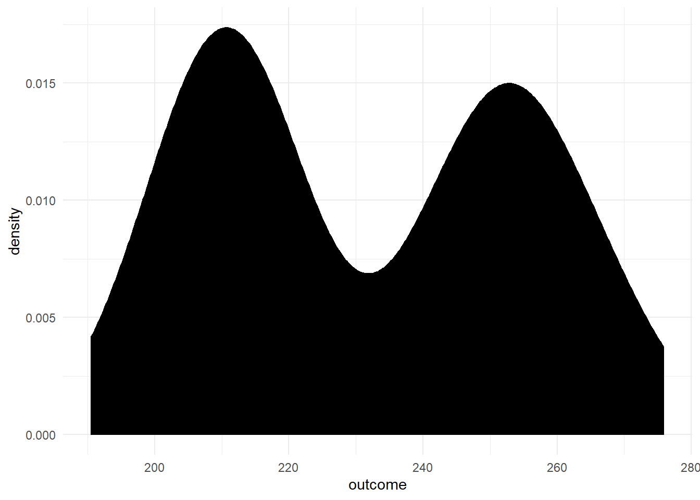
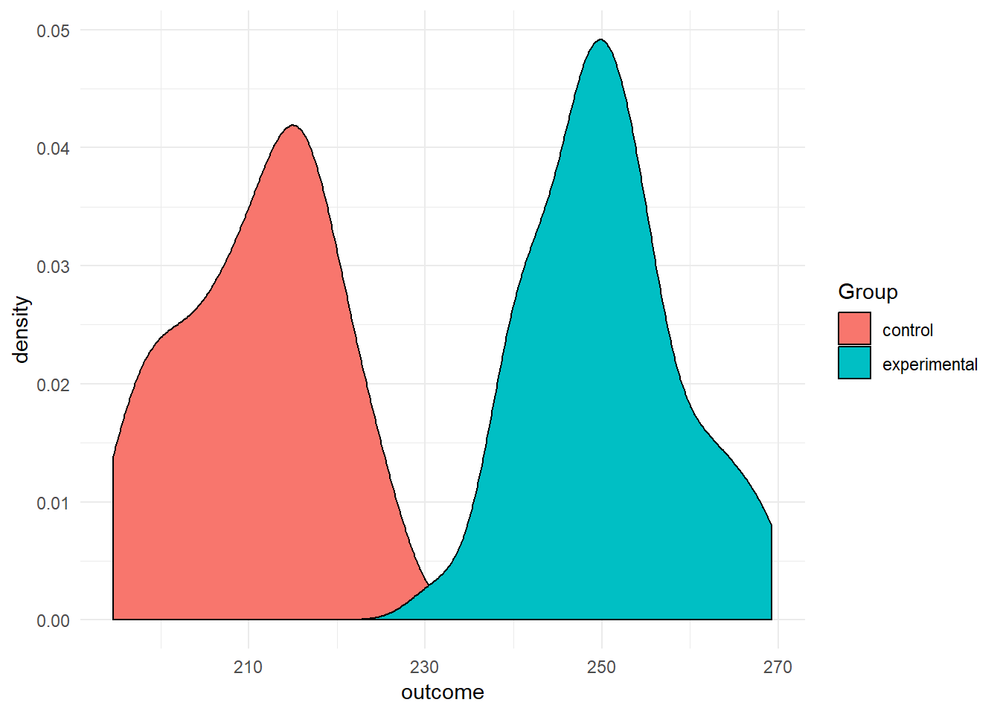
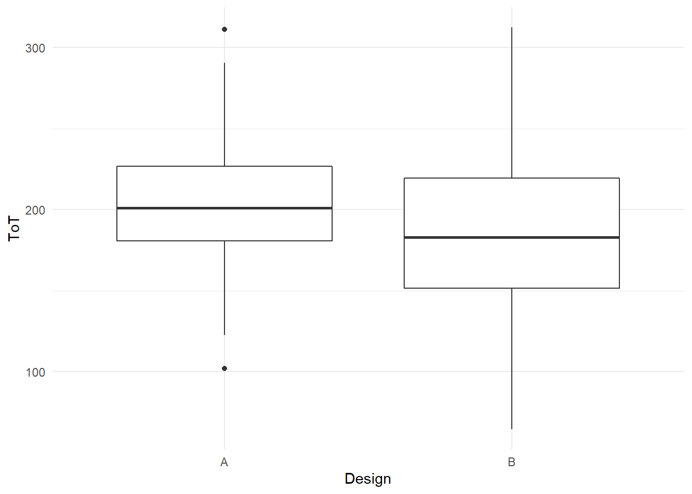
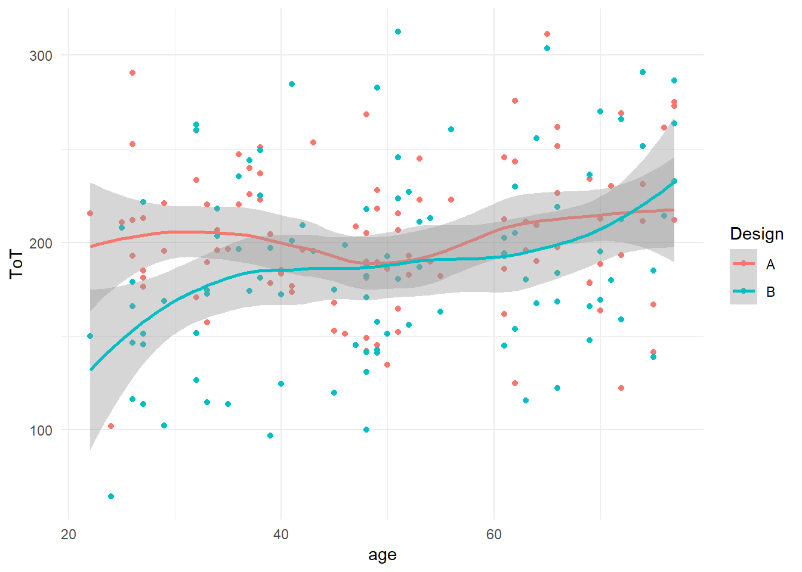
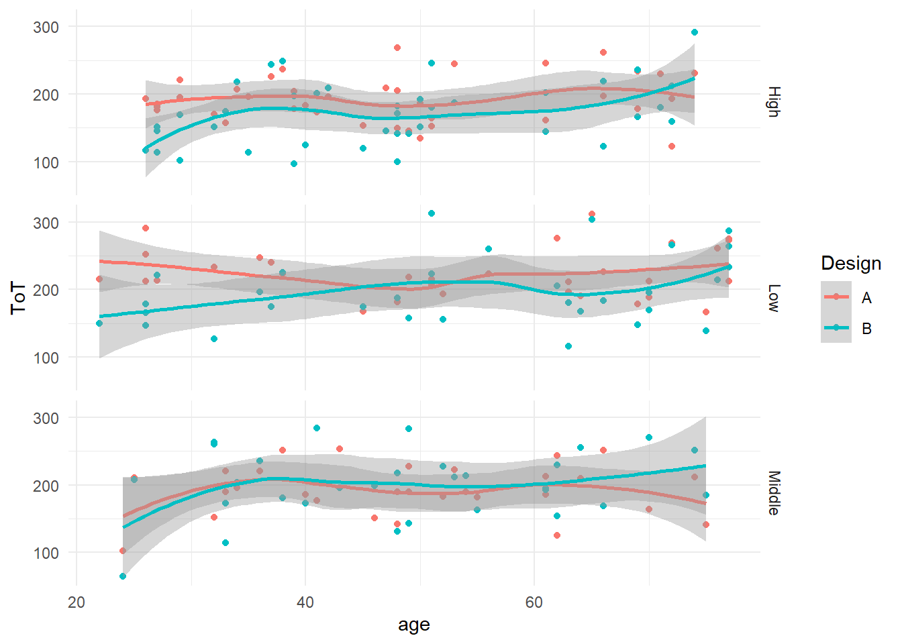
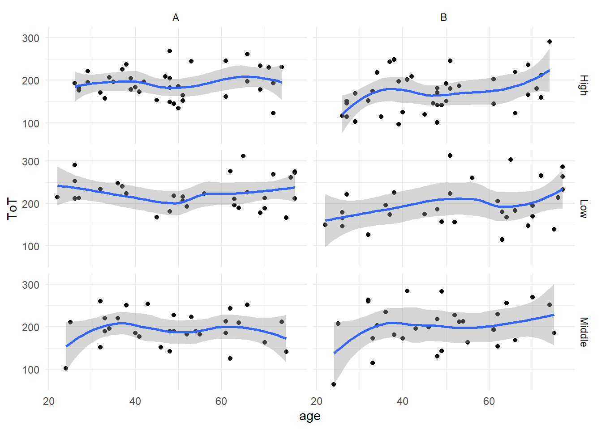

2 Getting started with R
In this book, we will be using the statistical computing environment R. R at its core is a programming language that specializes on statistics and data analysis. Like all modern programming languages, R is more than just a compiler or interpreter that translates human-writeable formal statements into something a computer understands and can execute. R comes with a complete set of standard libraries that cover the usual basic stuff, as well as a collection of common statistical routines, for example the t-test or functions to compute mean and variance. Even regression analysis and plotting is included in R. Finally, packaged with R comes a rudimentary programming environment, including a console, a simple editor and a help system.
Most of what comes packaged with R, we will set aside. R is basically a brilliantly designed programming language for the task, but many of the standard libraries are an inconsistent and outdated mess. For example, R comes with a set of commands to import data from various formats (SPSS, CSV, etc.). Some of these commands produce objects called data.frames, whereas others return lists of lists. Although one can convert lists into dataframes, it is easier and prevents confusion if all import functions simply create dataframes. As another example, to sort a data frame by participant number, one has to write the following syntax soup:
D[order(D$Part),]
In the past few years, a single person, Hadley Wickham, has almost single-handedly started an initiative known as the tidyverse. The tidyverse is a growing collection of libraries that ground on a coherent and powerful set of principles for data management. One of the core packages is dplyr and it introduces a rich, yet rather generic, set of commands for data manipulation. The sorting of a data frame mentioned above would be written as
D %>% arrange(Part)
One of Wickham’s first and well-known contributions is the ggplot system for graphics. Think of R’s legacy graphics system as a zoo of individual routines, one for boxplots, another one for scatterplots asf. Like animals in a zoo, they live in different habitats with practically no interaction. ggplot implements a rather abstract framework for data plots, where all pieces can be combined in a myriad of ways, using a simple and consistent syntax.
Where to get these gems? R is an open source system and has spawned an open ecosystem for statistical computing. Thousands of extensions for R have been made available by data scientists for data scientists. The majority of these packages is available through the comprehensive R archive network (CRAN). For the common user it suffices to think of CRAN as an internet catalogue of packages, that can be searched and where desired packages can be downloaded and installed in an instance.
Finally, R comes with a very rudimentary programming environment that carries the questionable charm of early 1990s. Whereas several alternatives exist, most R users will feel most comfortable with the R programming environment Rstudio. At the time of writing, it is the most user-friendly and feature rich software to program in R. The next sections describe how you can set up a fully functional environment and verify that it works. Subsequently, we will get to know the basics of programming in R.
2.1 Setting up the R environment
First, we have to make sure that you have the two essential applications R and Rstudio downloaded and installed on your computer. The two programs can be retrieved from the addresses below. Make sure to select the version fit for your operating system.
If you fully own the computer you are working with, meaning that you have administrator rights, just do the usual downloading and running of the setup. If everything is fine, you’ll find R and Rstudio installed under c\Programs\ and both are in your computers start menu. You can directly proceed to the installation of packages.
In corporate environments, two issues can arise with the installation: first a user may not have administrator rights to install programs to the common path c:\programs\. Second, the home directory may reside on a network drive, which is likely to cause trouble when installing packages.
If you have no administrator rights, you must choose your home directory during the setup. If that is a local directory, (c:/Users/YourName/), this should work fine and you can proceed with the installation of packages.
If your home directory (i.e. My Documents) is located on a network drive, this is likely to cause trouble. In such a case, you must install R and Rstudio to a local directory (on your computers hard drive), where you have full read/write access. In the following, it is assumed that this directory is D:/Users/YourName/:
- create a directory
D:/Users/YourName/R/. This is where both programs, as well as packages will reside. - create a sub directory
Rlibrarywhere all additional packages reside (R comes with a pack of standard packages, which are in a read-only system directory). - start Rstudio
- create a regular text file
File -> New File -> Text file - copy and paste code from the box below
- save the file as
.RprofileinD:/Users/YourName/R/ - open the menu and go to
Tools -> Global options -> General -> Default working directory. SelectD:/Users/YourName/R/.
## .Rprofile
options(stringsAsFactors = FALSE)
.First <- function(){
RHOME <<- getwd()
cat("\nLoading .Rprofile in", getwd(), "\n")
.libPaths(c(paste0(RHOME,"Rlibrary"), .libPaths()))
}
.Last <- function(){
cat("\nGoodbye at ", date(), "\n")
}With the above steps you have created a customized start-up profile for R. The profile primarily sets the library path to point to a directory on the computers drive. As you are owning this directory, R can install the packages without admin rights. In the second part, you configure Rstudio’s default path, which is where R, invoked from Rstudio, searches for the .Rprofile.
After closing and reopening Rstudio, you should see a message in the console window saying:
Loading .Rprofile in D:/Users/YourName/R/
That means that R has found the .Rprofile file and loaded it at start-up. The .Rprofile file primarily sets the path of the library, which is the collection of packages you install yourself. Whether this was successful can be checked by entering the console window in Rstudio, type the command below and hit Enter.
If your installation went fine, you should see an output like the following. If the output lacks the first entry, your installation was not successful and you need to check all the above steps.
[1] “D:/Users/YourName/R/Rlibrary” “C:/Program Files/R/R-3.3.0/library”
2.1.1 Installing CRAN packages
While R comes with a set of standard packages, thousands of packages are available to enhance functionality for every purpose you can think of. Most packages are available from the Comprehensive R Network Archive (CRAN).
For example, the package foreign is delivered with R and provides functions to read data files in various formats, e.g. SPSS files. The package haven is a rather new package, with enhanced functionality and usability. It is not delivered with R, hence, so we have to fetch it.
Generally, packages need to be installed once on your system and to be loaded everytime you need them. Installation is fairly straight-forward once your R environment has been setup correctly and you have an internet connection.
In this book we will use a number of additional packages from CRAN. The listed packages below are all required packages, all can be loaded using the library(package) command. The package tidyverse is a metapackage that installs and loads a number of modern packages. The ones being used in this book are:
- dplyr and tidyr for data manipulation
- ggplot for graphics
- haven for reading and writing files from other statistical packages
- readr for reading and writing text-based data files (e.g., CSV)
- readxl for reading Excel files
- stringr for string matching and manipulation
## tidyverse
library(tidyverse)
## data manipulation
library(openxlsx)
## plotting
library(gridExtra)
## regression models
library(rstanarm)
## other
library(devtools) ## only needed for installing from Github
library(knitr)
## non-CRAN packages
library(mascutils)
library(bayr)We start by checking the packages:
- create a new R file by
File --> New file --> R script - copy and paste the above code to that file and run it. By repeatedly pressing
Ctrl-Returnyou run every line one-by-one. As a first time user with a fresh installation, you will now see error messages like:
Error in library(tidyverse) : there is no package called ‘tidyverse’
This means that the respective package is not yet present in your R library. Before you can use the package tidyverse you have to install it from CRAN. For doing so, use the built-in package management in RStudio, which fetches the package from the web and is to be found in the tab Packages. At the first time, you may have to select a repository and refresh the package list, before you can find and install packages. Then click Install, enter the names of the missing package(s) and install. On the R console the following command downloads and installs the package tidyverse.
CRAN is like a giant stream of software pebbles, shaped over time in a growing tide. Typically, a package gets better with every version, be it in reliability or versatility, so you want to be up-to-date. Rstudio has a nice dialogue to update packages and there is the R command:
Finally, run the complete code block at once by selecting it and Ctrl-Enter. You will see some output to the console, which you should check once again. Unless the output contains any error messages (like above), you have successfully installed and loaded all packages.
Note that R has a somewhat idiosyncratic jargon: many languages, such as Java or Python, call “libraries” what R calls “packages”. The library in R is strictly the set of packages installed on your computer and the library command loads a package from the library.
2.1.2 Installing packages from Github
Two packages, mascutils and bayr are written by the author of this book. They have not yet been committed to CRAN, but they are available on Github which is a general purpose versioning system for software developers and few authors. Fortunately, with the help of the devtools package it is rather easy to install these packages, too. Just enter the Rstudio console and type:
Again, you have to do that only once after installing R and you can afterwards load the packages with the library command. Only if the package gets an update to add functionality or remove bugs, you need to run these commands again.
2.1.3 A first statistical program
After you have set up your R environment, you are ready to run your first R program (you will not yet understand all the code, but as you proceed with this book, all will become clear):
- Stay in the file where you have inserted and run the above code for loading the packages.
- Find the environment tab in Rstudio. It should be empty.
- Copy-and-paste the code below into your first file, right after library commands.
- Run the code lines one-by-one and observe what happens (in RStudio: Ctrl-Enter)
## Simulation of a data set with 100 participants
## in two between-subject conditions
N <- 100
levels <- c("control","experimental")
Group <- rep(levels, N/2)
age <- round(runif(N, 18, 35),0)
outcome <- rnorm(N, 42 * 5, 10) + (Group == "experimental") * 42
Experiment <- tibble(Group, age, outcome) %>% mascutils::as_tbl_obs()
Experiment %>% sample_n(8)
## Plotting the distribution of outcome
Experiment %>%
ggplot( aes(x = outcome) ) +
geom_density(fill = 1)

## ... statistical model comparing the groups
model <- stan_glm(formula = outcome ~ Group,
data = Experiment) | fixef | center | lower | upper |
|---|---|---|---|
| Intercept | 209.9 | 207 | 213.0 |
| Groupexperimental | 41.4 | 37 | 45.6 |
Observe Console, Environment and Plots. Did you see
- how the Environment window is populated with new variables (Values and Data)?
- a table appears in the Console, when executing the
summary(Experiment)command? - how the “camel-against-the-light” in Plots tab morphed into “two-piles-of-colored-sugar”?
Congratulations! You have just
- simulated data of a virtual experiment with two groups
- summarized the data
- plotted the data and
- estimated a Bayesian regression model that compares the two groups.
Isn’t it amazing, that in less than 20 simple statements we have just reached the level of a second-year bachelor student? Still, you may find the R output a little inconvenient, as you may want to save the output of your data analysis. Not long ago, that really was an issue, but in the past few years R has become a great tool for reproducable research. The most simple procedure of saving your analysis for print or sharing is to:
- save the R file your have created by hitting
CTRL-Sand selecting a directory and name. - in RStudio open
File --> Compile notebookand select Word as a format. - Hit
Compile
A new Word document should appear that shows all code and the output. Now, you can copy-and-paste the graphics into another document or a presentation.
2.1.4 Bibliographic notes
Getting started with Rstudio (presentation)
Getting started with Rstudio (ebook)
rstudio cheat sheets is a collection of beautifully crafted cheat sheets for ggplot, dplyr and more. I suggest you print the data mangling and ggplot cheat sheets and always keep them on your desk.
The tidyverse is a meta package that loads all core tidyverse packages by Hadley Wickham.
2.2 Learning R: a primer
cRazy as in ‘idiosyncrasy’
This book is for applied researchers in design sciences, whose frequent task is to analyze data and report it to stakeholders. Consequently, the way I use R in this book capitalizes on interactive data analysis and reporting. As it turns out, a small fraction of R, mostly from the tidyverse, is sufficient to write R code that is effective and fully transparent. In most cases, a short chain of simple data transformations tidies the raw data which can then be pushed into a modelling or graphics engine that will do the hard work. We will not bother (ourselves and others) with usual programming concepts such as conditionals, loops or the somewhat eccentric approaches to functional programming. At the same time, we can almost ignore all the clever and advanced routines that underlay statistical inference and production of graphics, as others have done the hard work for us.
R mainly serves three purposes, from easy to advanced: 1. interactive data analysis 2. creating data analysis reports 3. developing new statistical routines.
It turns out that creating multimedia reports in R has become very easy by the knitr/markdown framework that is neatly integrated into the Rstudio environment. I
With R one typically works interactively through a data analysis. The analysis often is a rather routine series of steps, like:
- load the data
- make a scatter plot
- run a regression
- create a coefficient table
A program in R is usually developed iteratively: once you’ve loaded and checked your data, you progress to the next step step of your analysis, test it and proceed. At every step, one or more new objects are created in the environment, capturing intermediate and final results of the analysis:
- a data frame holding the data
- a graphics object holding a scatterplot
- a model object holding the results of a regression analysis
- a data frame for the coefficient table
As R is an interpreter language, meaning there is no tedious compile-and-run cycles in everyday R programming. You develop the analysis as it happens. It is even normal to jump back and forth in an R program, while building it.
R is a way to report and archive what precisely you have been doing with your data. In statistics, mathematical formulas are the common form of unambiguously describing a statistical model. For example, the following equation defines a linear regression model between the observed outcome \(y\) and the predictor \(x\):
\[ \begin{aligned} \mu_i &= \beta_0 + \beta_1x_i\\ y_i &\sim N(\mu_i, \sigma) \end{aligned} \]
As we will later see 4.3.1, in Rs formula language the same model is unambiguously specified as:
y ~ x
R is currently the lingua franca of statistical computing. As a programming language, R has the same precision as math, but is more expressive. You can specify complex models, but also graphics and the steps of data checking and preparation. As an example, consider an outlier removal rule of:
An observation is valid if it does not exceed the tenfold of the observation mean.
We just applied our own rule of outlier removal to the data. Others may consider this rule invalid or arbitrary. Disagreement is virtue in science and one can only disagree with what one actually sees. In R, the researcher formally reports what precisely has been done with the data. For example, the same outlier removal rule is unambiguously specified by the following code (the first line just simulates some data).
| score |
|---|
| 1 |
| 2 |
| 4 |
| 3 |
| 5 |
| 6 |
| 50 |
Finally, R is a way to develop and share statistical programs. Thousands of packages in the R ecosystem cover almost all statistical problems you can imagine. As a programming language, R has been designed for that particular purpose. Under the hood of R, a bunch of generic, yet powerful, principles purr to make it a convenient language for typical problems in statistical computation. Readers with programming experience can fly over the R basics that follow. But, as a specific purpose language R has a few idiosyncracies you should know about:
Almost all programming languages the first element of a list has the index zero. We got used to it, but for beginners it is a another hurdle that is unnecessary. Mathematicians, catholiques, software developers in bars and everyone, young or old, counts
“one”, “two” ,“three”.
And so does R:
## [1] 1 2 3Counting from one is perhaps the most lovable idiosyncracy of R. But, lets also welcome people who have experience with other programming languages:
The first thing one has to know about R is that it is a functional programming language. A function simply is a programmed procedure that takes data as input, applies some transformation and returns data as output. That sounds trivial, but there is an important difference to most other languages: Different to procedures in Pascal or object oriented methods (in Java or Python), functions are forbidden to modify any external object. A certain function is a black box, but one can be sure that the only thing it does is return a new object.
At the same time, functions are first-class citizens in R and can be called everywhere, even as an argument to another function. The plyr package is famous for functions that call functions, also called high-level functions. The following three liner makes heavy use of high level functions. First, a list of binary matrices is generated by repeatedly calling a random number generator, then the row sum of all matrices is computed and returned as a (new) list.
make_binary_matrix <-
function(size) as.matrix(rbernoulli(size^2, p = 1/4))
LoM <- llply(c(5:7), make_binary_matrix)
llply(LoM, rowSums)## [[1]]
## [1] 0 0 0 0 0 0 0 1 0 0 0 1 0 0 0 0 0 0 1 0 0 0 0 0 0
##
## [[2]]
## [1] 0 0 0 0 0 1 0 1 0 0 0 1 0 0 1 1 1 1 1 0 0 0 0 0 0 0 0 1 1 0 0 0 0 0 0 0
##
## [[3]]
## [1] 0 0 0 0 0 0 0 0 1 1 1 0 0 0 1 1 0 0 0 0 0 0 0 1 0 1 0 1 1 0 0 0 0 0 1 0 0 0
## [39] 0 0 1 0 0 0 0 0 0 0 0What we have seen is a routine application of higher level functions: apply a transformation to a sequence of data sets. In a majority of programming languages you had to write a loop instead and this is why experienced programmers can easily fall for the active user paradox when they learn R, by sticking to loops. Believe me one thing: Once you have wrapped your head around functional programming, you will program the same procedure in a quarter of time with half the code and your program will run significantly faster. My general advice is:
Whenever you think you need a loop, you don’t.
For me it helped to imagine the following: loops carry the notion of chain of data that moves over a fixed transformation device. In functional programing functions the can work in a hierarchy, a high-level device moves along a string of data. It carries an exchangeable low-level device that applies the desired transformation to every position.
If you come from relational data bases you you have something in common with the statistician: you both think in transformation of tables. Not coincidently, the features in dplyr, the tidy data transformation engine, are clearly borrowed from SQL. You will also feel at home with the idea of reports powered by functional chunks embedded in a templating system.
For object orientation folks, R is a good choice, but you have to get used to it. First, it gives you the choice of several object orientation systems, which sometimes requires to install a package. The so-called S3 system is the original. It is rather limited and some even call it informal. The approach is as simple as it is unusal. S3 mainly is a raw method dispatcher that can handles overloading of functions. S3 puts methods first, then objects, whereas in traditional object orientation, the method belongs to the class, making the object “knows” its methods. In S3, the object and the method both know their class. When calling an S3 method, you actually call a generic method that finds the matching method and applies it.
Beginners are at peace with all of this. You can count like you do. Functional programming is intuitive for working on research data. And because of S3 the function summary always does something useful.
2.2.1 Assigning and calling Objects
Any statistical analysis can be thought of as a production chain. You take the raw data and process it into a neat data table, which you feed into graphics and regression engines or summarize by other means. At almost every step there is an input and an output object.
Objects are a basic feature of R. They are temporary storage places in the computer’s memory. Objects always have a name chosen by the programmer. By its name, a stored object can be found back at any time. Two basic operations apply for all objects: an object is stored by assigning it a name and it is retrieved by calling its name. If you wanted to store the number of observations in your data set under the name N_obs, you use the assignment operator <-. The name of the variable is left of the operator, the assigned value is right of it.
Now, that the value is stored, you can call it any time by simply calling its name:
## [1] 100Just calling the name prints the value to Console. In typical interactive programming sessions with R, this is already quite useful. But, you can do much more with this mechanism.
Often, what you want is to do calculations with the value. For example, you have a repeated measures study and want to calculate the average number of observations per participant. For this you need the number of observations, and the number of participants. The below code creates both objects, does the calculation (right of <-) and stores it in another object avg_N_Obs
## [1] 4Objects can exist without a name, but are volatile, then. They cannot be used any further. The following arithmetic operation does create an object, a single number. For a moment or so this number exists somewhere in your computers memory, but once it is printed to the screen, it is gone. Of course, the same expression can be called again, resulting in the same number. But, strictly, it is a different object.
## [1] 4## [1] 4There even is a formal way to show that the two numbers, although having the same value assigned, are located at different addresses. This is just for the purpose of demonstration and you will rarely use it in everyday programming tasks:
## [1] "<000000003DA6A530>"## [1] "<000000003DAD36C8>"2.2.2 Vectors
Notice the [1] that R put in front of the single value when printing it? This is an index. Different to other programming languages, all basic data types are vectors in R. Vectors are containers for storing many values of the same type. The values are addressed by the index, N_Obs[1] calls the first element. In R, indices start counting with 1, which is different to most other languages that start at zero. And if you have a single value only, this is just a vector of length one.
For statistics programming having vectors as basic data types makes perfect sense. Any statistical data is a collection of values. What holds for data is also true for functions applied to data. Practically all frequently used mathematical functions work on vectors, take the following example:
## [1] 1.96The rnorm command produces a vector of length 100 from three values. More precisely, it does 100 random draws from a normal distribution with mean 2 and an SD of 1. The mean command takes the collection and reduces it to a single value. By the way, this is precisely, what we call a statistic: a single quantity that characterizes a collection of quantities.
2.2.3 Basic object types
Objects can be of various classes. In R the common basic classes are: logical, factor, character, integer and numeric. Besides that, programmers can define their own complex classes, for example, to store the results of regression models.
Objects of type logical store the two levels TRUE, FALSE, like presence or absence of a treatment, or passed and failed test items. With Boolean operators one can compute new logical values, for example
## [1] FALSE## [1] TRUEMore generally, logical values can be used for categorization, when their are only two categories, which is called a dichotomous variable. For example, gender is usually coded as a vector of characters ("m", "f", "f"), but one can always do:
Programmers are lazy folks when it comes to typing, therefore R allows you to abbreviate TRUE and FALSE as shown above. As a consequence, one should never assign objects the name reserved for logical values, so don’t do one of the following:
## never do this
TRUE <- "All philosophers have beards" ## a character object, see below
F <- "All gods existed before the big bang"
42 * FThe class numeric stores real numbers and is therefore abundant in statistical programming. All the usual arithmetic operations apply:
## [1] 1.41Objects of class integer are more specific as they store natural numbers, only. This often occurs as counts, ranks or indices.
## [1] 1 3 2The usual arithmetic operations apply, although the result of operation may no longer be integer, but numeric
## [1] 10.7## [1] "numeric"Surprisingly, logical values can be used in arithmetic expressions, too. When R encounters value TRUE in an arithmetic context, it replaces it with 1, zero otherwise. Used with multiplication, this acts like an on/off switch, which we will put to use for building factorial models.
## [1] 2## [1] 2## [1] 4 4 2Data sets usually contain variables that are not numeric, but partition the data into groups. For example, we frequently group observations by the following
Part: participantCondition: experimental conditionDesign: one of several designsEducation: level of education (e.g., low, middle or high)
Two object types apply for grouping observations: factor and character. While factors specialize on grouping observations, character objects can also be used to store longer text, say the description of a usability problem. The following identifies two conditions in a study, say a comparison of designs A and B. Note how the factor identifies its levels when called to the screen:
## [1] "A" "B" "B" "A"## [1] A B B A
## Levels: A BStatistical analyses deal with real world data which ever so often is messy. Frequently, a planned observation could not be recorded, because the participant decided to quit or the equipment did not work properly or the internet collapsed. Users of certain legacy statistics packages got used to coding missing observations as -999 and then declared this a missing value. In R missing values are first-class citizens. Every vector of a certain class can contain missing values, which are identified as NA.
Most basic statistics functions, like mean(), sd() or median() are act conservatively when the data contains missing values. If there is a single NA in the variable to be summarized, the result is NA. While this is good in the sense of transparency, much of the time what the researcher wants is to have the summary statistic with NA values being removed, first.
## [1] NA## [1] 2.5This book is about programming and statistics at the same time. Unfortunately, there are a few terms that have a particular meaning in both domains. One of those is a “variable”. In statistics, a variable usually is a property we have recorded, say the body length of persons, or their gender. In general programming, a variable is a space in the computers memories, where results can be stored and recalled. Fortunately, R avoids any confusion and calls objects what is usually called a programming variable.
2.2.4 Operators and functions
R comes with a full bunch of functions for creating and summarizing data. Let me first introduce you to functions that produce exactly one number to characterize a vector. The following functions do that with to the vector X, every in their own way:
These functions are a transformation of data. The input to these transformations is X and is given as an argument to the function. Other functions require more than one argument. The quantile function is routinely used to summarize a variable. Recall that X has been drawn from a Normal distribution of \(\mu=2\) and standard deviation \(\sigma = 1\). All Normal distributions have the property that about 66% of the mass is within the range of \(\mu-\sigma\) and \(\mu+\sigma\) . That means in turn: 17% are below \(\mu-\sigma\) and 66 + 17 = 83% are below \(\mu+\sigma\). The number of observations in a certain range of values is called a quantile. The quantile function operates on X, but takes an (optional) vector of quantiles as second argument:
## 17% 83%
## 0.903 2.978Most functions in R have optional arguments that let you change how the function performs. The basic mathematical functions all have the optional argument na.rm. This is a switch that determines how the function deals with missing values NA. Many optional arguments have defaults. The default of na.rm is FALSE (“return NA in case of NAs in the vector”). By setting it to TRUE, they are removed before operation.
## [1] NA## [1] 2Most more complex routines in R have an abundance of parameters, most of which have reasonable defaults, fortunately. To give a more complex example, the first call of stan_glm performs a Bayesian estimation of the grand mean model. The second does a
Poisson grand mean model with 5000 iterations per MCMC chain. As seed has been fixed, every subsequent run will produce the exact same chains. My apologies for the jargon!
D_1 = tibble(X = rnorm(20, 2, 1))
M_1 = stan_glm(X ~ 1,
data = D_1)
D_2 = tibble(X = rpois(20, 2))
M_2 = stan_glm(X ~ 1,
family = poisson,
seed = 42,
iter = 5000,
data = D_1)R brings the usual set of arithmetic operators, like +, -, *, / and more. In fact, an operator is just a function. The sum of two numbers can, indeed, be written in these two ways:
## [1] 3## [1] 3The second term is a function that takes two numbers as input and returns a third. It is just a different syntax, and this one is called the polish notation. I will never use it throughout the rest of this book.
Another set of commonly used operators are logical, they implement Boolean algebra. Some common Boolean operators are shown in the truth table:
| A | B | !A | A & B | A | B | A == B |
|---|---|---|---|---|---|
| not | and | or | equals | ||
| T | T | F | T | T | T |
| T | F | F | F | T | F |
| F | T | T | F | T | F |
| F | F | T | F | F | T |
Be careful not to confuse Boolean “and” and “or” with their common natural language use. If you ask: “Can you buy apples or pears on the market?”, the natural answer would be: “both”. The Boolean answer is: TRUE. In a requirements document you could state “This app is for children and adults”. In Boolean the answer would be FALSE, because no one can be a child and an adult at the same time, strictly. A correct Boolean statement would be: “The envisioned users can be adult or child”.
Further Boolean operators exist, but can be derived from the three above. For example, the exclusive OR, “either A or B” can be written as: (A | B) & !(A & B). This term only gets TRUE when A or B is TRUE, but not both. In the data analysis workflow, Boolean logic is frequently used for filtering data and we re-encounter them in data transformation.
Finally, it sometimes is convenient or necessary to program own functions. A full coverage of developing functions is beyond the scope of this introduction, so I show just one simple example. If one desires a more convenient function to compute the mean that ignore missing values by default, this can be constructed as follows:
## [1] 2Notice that:
- the
function()function creates new functions - the arguments given to
function(x)will be the arguments expected by the functionmean_conv(x). - code enclosed by
More examples of creating basic functions can be found in section @ref(descriptive_stats). As R is a functional programming language, it offers very elaborate ways of programming functions, way beyond what is found in common languages, such as Python or Java. An advanced example is given in section @ref(forecasting_LOO).
2.2.5 Storing data in data frames
Most behavioral research collects real data to work with. As behavior researchers are obsessed about finding associations between variables, real data usually contains several. If you have a sample of observations (e.g. participants) and every case has the same variables (measures or groups), data is stored in a table structure, where columns are variables and rows are observations.
R knows the data.frame objects to store variable-by-observation tables. Data frames are tables, where columns represent statistical variables. Variables have names and can be of different data types, as they usually appear in empirical research. In many cases data frames are imported to R, as they represent real data. Here, we first see how to create data frames by simulation. First, we usually want some initial inspection of a freshly harvested data frame.
Several commands are available to look into a data frame from different perspectives. Another command that is implemented for a variety of classes, ibluding dara frames, is summary. For all data frames, it produces an overview with descriptive statistics for all variables (i.e. columns), matching their object type. Particularly useful for data initial screening, is that missing values are listed per variable.
## Obs Group age outcome
## Min. : 1.0 Length:100 Min. :18.0 Min. :179
## 1st Qu.: 25.8 Class :character 1st Qu.:22.0 1st Qu.:211
## Median : 50.5 Mode :character Median :27.0 Median :233
## Mean : 50.5 Mean :26.9 Mean :232
## 3rd Qu.: 75.2 3rd Qu.:32.0 3rd Qu.:252
## Max. :100.0 Max. :35.0 Max. :274The str (structure) command works on any R object and displays the hierarchical structure (if there is one):
## Classes 'tbl_obs', 'tbl_df', 'tbl' and 'data.frame': 100 obs. of 4 variables:
## $ Obs : int 1 2 3 4 5 6 7 8 9 10 ...
## $ Group : chr "control" "experimental" "control" "experimental" ...
## $ age : num 18 19 31 28 19 19 32 28 33 31 ...
## $ outcome: num 209 236 206 256 221 ...Data frames store variables, but statistical procedures operate on variables. We need ways of accessing and manipulating statistical variables and we will have plenty. First, recall that in R the basic object types are all vectors. You can store as many elements as you want in an object, as long as they are of the same class.
Internally, data frames are a collection of “vertical” vectors that are equally long. Being a collection of vectors, the variables of a data frame can be of different classes, like character, factor or numeric. In the most basic case, you want to calculate a statistic for a single variable out of a data frame. The $ operator pulls the variable out as a vector:
## [1] 231As data frames are rectangular structures, you can also access individual values by their addresses. The following commands call
- the first outcome measure
- the first to third elements of Group
- the complete first row
Addressing one or more elements in square brackets, always requires two elements, first the row, second the column. As odd as it looks, one or both elements can be empty, which just means: get all rows (or all columns). Even the expression Experiment[,] is fully valid and will just the return the whole data frame.
There is an important difference, however, when using R’s classic data.frame as compared to dplyr’s tibbleimplementation: When using single square brackets on dplyr data frames one always gets a data frame back. That is a very predictable behavior, and very much unlike the classic: with data.frame, when the addressed elements expand over multiple columns, like
Experiment[, 1:2], the result will be a data.frame object, too. However, when slicing a single column, the result is a vector:
| Obs | Group |
|---|---|
| 1 | control |
| 2 | experimental |
| Obs | Group | age | outcome |
|---|---|---|---|
| 1 | control | 18 | 209 |
## [1] 1 2 3 4 5 6 7 8 9 10 11 12 13 14 15 16 17 18
## [19] 19 20 21 22 23 24 25 26 27 28 29 30 31 32 33 34 35 36
## [37] 37 38 39 40 41 42 43 44 45 46 47 48 49 50 51 52 53 54
## [55] 55 56 57 58 59 60 61 62 63 64 65 66 67 68 69 70 71 72
## [73] 73 74 75 76 77 78 79 80 81 82 83 84 85 86 87 88 89 90
## [91] 91 92 93 94 95 96 97 98 99 100Predictability and a few other useful tweaks made me prefer tibble over data.frame. But, many third-party packages continue to produce classic data.frame objects. For example, there is an alternative to package `readxl, openxlsx, which reads (and writes) Excel files. It returns classic data.frames, which can easily be converted as follows:
While tibble[] behaves perfectly predictable, in that it always returns a data frame, even when this is just a single column or cell. Sometimes, one wants to truly extract a vector. With a tibble a single column can be extracted as a vector, using double square brackets, or using the $ operator.
Sometimes, it may be necessary to change values in a data frame. For example, a few outliers have been discovered during data screening, and the researcher decides to mark them as missing values. The syntax for indexing elements in a data frame can be used in conjunction with the assignment operator <-. In the example below, we make the simulated experiment more realistic by injecting a few outliers. Then we discard these outliers by setting them all to NA.
## injecting
Experiment[2, "outcome"] <- 660
Experiment[6, "outcome"] <- 987
Experiment[c(1,3), "age"] <- -99
## printing first few observations
head(Experiment)
## setting to NA
Experiment[c(2, 6),"outcome"] <- NA
Experiment[c(1, 3),"age"] <- NABesides the injection, note two more features of addressing data frame elements. The first is, that vectors can be used to address multiple rows, e.g. 2 and 6. In fact, the range operator 1:3 we used above is just a convenient way of creating a vector c(1,2,3). Although not shown in the example, this works for columns alike.
The careful reader may also have noted another oddity in the above example. With Experiment[c(2, 6),"outcome"] we addressed two elements, but right-hand side of <- is only one value. That is a basic mechanism of R, called reuse. When the left-hand side is longer than the right-hand side, the right-hand side is reused as many times as needed. Many basic functions in R work like this, and it can be quite useful. For example, you may want to create a vector of 20 random numbers, where one half has a different mean as the second half of observations.
The above example reuses the two mean values 50 times, creating an alternating pattern. Strictly speaking, the sd = 1 parameter is reused, too, a 100 times. While reuse often comes in convenient, it can also lead to difficult programming errors. So, it is a good advice to be aware of this mechanism and always carefully check the input to vectorized functions.
2.2.6 Import, export and archiving
R lets you import data from almost every conceivable source, given that you have installed and loaded the appropriate packages (foreign, haven or openxlsx for Excel files). Besides that R has its own file format for storing data, which is .Rda files. With these files you can save data frames (and any other object in R), using the save(data, file = "some_file.Rda") and load(file = "some_file.Rda") commands.
Few people create their data tables directly in R, but have legacy data sets in Excel (.xslx) and SPSS files (.sav). Moreover, the data can be produced by electronic measurement devices (e.g. electrodermal response measures) or programmed experiments can provide data in different forms, for example as .csv (comma-separated-values) files. All these files can be opened by the following commands:
## Text files
Experiment <-
read_csv("Data/Experiment.csv")
## Excel
Experiment <-
read_excel("Data/Experiment.xlsx", sheet = 1)
## SPSS (haven)
Experiment <-
read_sav("Data/Experiment.sav")
## SPSS (foreign)
Experiment <-
read.spss("Data/Experiment.sav", to.data.frame = TRUE)Note that I gave two options for reading SPSS files. The first (with an underscore) is from the newer haven package (part of tidyverse). With some SPSS files, I experienced problems with this command, as it does not convert SPSS’s data type labelled (which is almost the same as an R factor). The alternative is the classic read.spss command which works almost always, but as a default it creates a list of lists, which is not what you typically want. With the extra argument, as shown, it behaves as expected.
Remember, data frames are objects and volatile as such. If you leave your session, they are gone. Once you have you data frame imported and cleaned, you may want to store it to a file. Like for reading, many commands are available for writing all kinds of data formats. If you are lucky to have a complete R-based workflow, you can conveniently use R’s own format for storing data, Rdata files. For storing a data frame and then reading it back in (in your next session), simply do:
Note that with save and load all objects are restored by their original names, without using any assignments. Take care, as this will not overwrite any object with the same name. Another issue is that for the save command you have to explicitly refer to the file argument and provide the file path as a character object. In Rstudio, begin typing file="", put the cursor between the quotation marks and hit Tab, which opens a small dialogue for navigation to the desired directory.
Once you have loaded, prepared and started to analyze a data frame in R, there is little reason to go back to any legacy program. Still, the haven and foreign packages contain commands to write to various file formats. I’ll keep that as an exercise to the reader.
2.2.7 Case environments
This book features more than a dozen case studies. Every case will be encountered several times and multiple objects are created along the way: data sets, regressions, graphics, tables, you name it. That posed the problem of naming the objects, so that they are unique. I could have chosen object names, like: BrowsingAB_M_1, AUP_M_1, etc. But, this is not what you normally would do, when working on one study at a time. Moreover, every letter you add to a line of code makes it more prone to errors and less likely that you, dear reader, are typing it in and trying it out yourself.
For these reasons, all cases are enclosed in case environments and provided with this book. For getting a case environment to work in your session, it has to be loaded from the respective R data file first:
In R, environments are containers for collections of objects. If an object BAB1 is placed in an environment BrowsingAB, it can be called as BrowsingAB$BAB1. This way, no brevity is gained. Another way to assess objects in an environment is to attach the environment first as:
Calling attach gets you into the namespace of the environment (formally correct: the namespace gets imported to your working environment). All objects in that namespace become immediately visible by their mere name. The detach command leaves the environment, again. When working with the case environments, I strongly recommend to detach before attaching another environment.
All case environments provided with this book contain one or more data sets. Many of the cases are synthetic data which has been generated by a simulation function. This function, routinely called simulate, is provided with the case environment, too. That gives you the freedom to produce your own data sets with the same structure, but different effects.
Generally, calling the simulation function without any further arguments, exactly reproduces the synthetic data set provided with the case environment.
simulate() %>% as_tbl_obs() ## reproduces the data frame D_1
simulate(N = 6) %>% as_tbl_obs() ## simulates first 6 participants onlyFurthermore, once you delve deeper into R, you can critically inspect the simulation function’s code for its behavioral and psychological assumptions (working through the later chapters on data management and simulation will help).
## function(N = 40,
## beta = c(Intercpt = 60,
## fnt_size_12 = -12,
## fnt_color_blk = -10,
## ia_blk_12 = 8),
## sigma = 5,
## seed = 42)
## {
## set.seed(seed)
## out <-
## tibble(Part = 1:N,
## font_size = factor(rep(c(1, 2), N/2),
## levels = c(1,2),
## labels = c("10pt", "12pt")),
## font_color = factor(c(rep(1, N/2), rep(2, N/2)),
## levels = c(1,2),
## labels = c("gray", "black"))) %>%
## mutate( mu = beta[1] +
## beta[2] * (font_size == "12pt") +
## beta[3] * (font_color == "black") +
## beta[4] * (font_color == "black") * (font_size == "12pt"),
## ToT = rnorm(N, mu, sigma)) %>%
## as_tbl_obs()
##
## #class(out) <- append(class(out), "sim_tbl")
## attr(out, "coef") <- list(beta = beta,
## sigma = sigma)
## attr(out, "seed") <- seed
##
## out %>% as_tbl_obs()
## }
## <bytecode: 0x000000002e133810>Finally, the case environments contain all objects that have been created throughout this book. This is especially useful for the regression models, as fitting these can take from a few seconds to hours.
Note that working with environments is a tricky business. Creating these case environments in an efficient way was more difficult than you may think. Therefore, I do not recommend using environments in everday data analysis, with one exception: at any moment the current working environment contains all objects that have been created, so far. That is precisely the set of objects shown in the Environment pane of Rstudio (or call ls() for a listing). Saving all objects and retrieving them when returning from a break is as easy as:
Next to that, Rstudio can be configured to save the current workspace on exit and reload it on the next start. When working on just one data analysis for a longer period of time, this can be a good choice.
2.2.8 Structuring data
In the whole book, data sets are structured according to the rule one-row-per-observation of the dependent variable (the ORPO rule). Many researchers still organize their data tables as one-row-per-participant, as is requested by some legacy statistics programs. This is fine in research with non-repeated measures, but will not function properly with modern regression models, like linear mixed-effects models. Consider a study where two designs were evaluated by three participants using a self-report item, like “how easy to use is the interface?” Then, the wrong way of structuring the data would be:
ORPO %>%
filter(Task == 1, Item == 1) %>%
mascutils::discard_redundant() %>%
spread(Design, response) %>%
as_tbl_obs()The correct way of setting up the data frame is:
| Part | Design | response |
|---|---|---|
| 1 | A | 4 |
| 2 | A | 4 |
| 3 | A | 6 |
| 1 | B | 1 |
| 2 | B | 4 |
| 3 | B | 3 |
The ORPO rule dictates another principle: every row should have a unique identifier, which can be a combination of values. In the example above, every observation is uniquely identified by the participant identifier and the design condition. If we extend the example slightly, it is immediatly apparent, why the ORPO rule is justified. Imagine, the study actually asked three partcipants to rate two different tasks on two different designs by three self-report items. By the ORPO rule, we can easily extend the data frame as below (showing a random selection of rows). I leave it up to the reader to figure out how to press such a data set in the wide legacy format.
Using identifiers is good practice for several reasons. First, it reduces problems during manual data entry. Second, it allows to efficiently record data in multi-method experiments and join them automatically. An exammple is given in Appendix A.1.8. Lastly, the identifiers will become statistically interesting by themselves when we turn to linear mixed-effects models and the notion of members of a population 5.5. Throughout the book I will use standard names for recurring identifier variables in design research:
- Part
- Design
- Item
- Task
Note that usually these entities get numerical identifiers, but these numbers are just labels. Throughout, variables are written Uppercase when they are entities, but not real numbers. An exception is the trial order in experiments with massive repeated measures. These get a numerical type to allow exploring effects over time such as learning, training and fatigue.
| Part | Task | Design | Item | response |
|---|---|---|---|---|
| 1 | 1 | B | 1 | 1 |
| 1 | 2 | B | 1 | 6 |
| 2 | 1 | B | 3 | 5 |
| 2 | 2 | B | 2 | 3 |
| 3 | 2 | A | 2 | 6 |
| 3 | 2 | B | 2 | 4 |
2.2.9 Data transformation
Do you wonder about the strange use of %>% in my code above? This is the tidy way of programming data transformations in R.
The so-called magritte operator %>% is part of the dplyr/tidyr framework for data manipulation. It chains steps of data manipulation by connecting transformation functions, also called piping. In the following, we will first see a few basic examples. Later, we will proceed to longer transformation chains and see how graceful dplyr piping is, compared to the classic data transformation syntax in R.
Importing data from any of the possible resources, will typically give a data frame. However, often the researcher wants to select or rename variables in the data frame. Say, you want the variable Group to be called Condition, omit the variable age and store the new data frame as Exp. The select command does all this. In the following code the data frame Experiment is piped into select. The variable Condition is renamed to Group, and the variable outcome is taken as-is. All other variables are discarded.
Another frequent step in data analysis is cleaning the data from missing values and outliers. In the following code example, we first “inject” a few missing values for age (which were coded as -99) and outliers (>500) in the outcome variable. Note that I am using some R commands that you don’t need to understand by now. Then we reuse the above code for renaming (this time keeping age on board) and add some filtering steps:
## rename, then filtering
Exp <-
Experiment %>%
select(Condition = Group, age, outcome) %>%
filter(outcome < 500) %>%
filter(age != -99)
Exp %>% as_tbl_obs()During data preparation and analysis, new variables are created routinely. For example, the covariate is often shifted to the center before using linear regression:
Finally, for the descriptive statistics part of your report, you probably want to summarize the outcome variable per experimental condition. The following chain of commands first groups the data frame, then computes means and standard deviations. At every step, a data frame is piped into another command, which processes the data frame and outputs a data frame.
| Condition | mean | sd |
|---|---|---|
| control | 211 | 10.76 |
| experimental | 252 | 8.41 |
2.2.10 Plotting data
Good statistical graphics can vastly improve your and your readers understanding of data and results. This book exclusively introduces the modern ggplot2 graphics system of R, which is based on the grammar of graphics.
Every plot starts with piping a data frame into the ggplot(aes(...)) command. The aes(...) argument of ggplot creates the aesthetics, which is a mapping between variables and features of the plot (and only remotely has something to do with beauty). Review the code once again that produces the piles-of-sugar: the aesthetics map the variable Group on the fill color, whereas outcome is mapped to the x axis. For a plot to be valid, there must at least one layer with a geometry. The above example uses the density geometry, which calculates the density and maps it to the y axis.
The ggplot2 plotting system knows a full set of geometries, like:
- scatter plots with
geom_point() - smooth line plots with
geom_smooth() - histograms with
geom_histogram() - box plots with
geom_boxplot()and - my personal favorite: horizontal density diagrams with
geom_violin()
For a brief demonstration of ggplots basic functionality, we use the BAB1 data set of the BrowsingAB case. We attach the case environment and use the str command to take a first look at the data:
The BrowsingAB case is a virtual series of studies, where two websites were compared by how long it takes users to complete a given task, time-on-task (ToT). Besides the design factor, a number of additional variables exist, that could possibly play a role for ToT, too. We explore the data set with ggplot:
We begin with a plot that shows the association between age of the participant and ToT. Both variables are metric and suggest themselves to be put on a 2D plane, with coordinates x and y, a scatter plot.

Let’s take a look at the elements of the command chain: The first two lines pipe the data frame into the ggplot engine.
At that moment, the ggplot engine “knows” which variables the data frame contains and hence are available for the plot. It does not yet know, which variables are being used, and how. The next step is, usually, to consider a basic (there exist more than 30) geometry and put it on a layer. The scatter plot geometry of ggplot is geom_point:
The last step is the aesthetic mapping, which tells ggplot the variables to use and how to map them to aesthetic properties of the geometry. The basic properties of points in a coordinate system are the x and y-positions:
The function aes creates a mapping where the aesthetics per variable are given. When call aes directly, we see that it is just a table.
## Aesthetic mapping:
## * `x` -> `age`
## * `y` -> `ToT`One tiny detail in the above chain has not yet been explained: the +. When choosing the geometry, you actually add a layer to the plot. This is, of course, not the literal mathematical sum. Technically, what the author of the ggplot2 package did, was to overload the + operator. A large set of ggplot functions can be combined in a myriad of ways, just using +. The overloaded + in ggplot is a brilliant analogy: you can infinitely chain ggplot functions, like you can create long sums. You can store ggplot object and later modify it by adding functions. The analogy has its limits, though: other than sums, order matters in ggplot combinations: the first in the chain is always ggplot and layers are drawn upon each other.
Let’s move on with a slightly different situation that will result in a different geometry. Say, we are interested in the distribution of the time-on-task measures under the two designs. We need a geometry, that visualizes the distribution of quantitative variables split by a grouping variable, factor. The box plot does the job:

The box plot maps ToT to y (again). The factor Design is represented as a split on the x-axis. Interestingly, the box plot does not represent the data as raw as in the scatter plot example. The geometry actually performs an analysis on ToT, which produces five statistics: min, first quartile, median, third quartile and max. These statistics define the vertical positions of bars and end points.
Now, we combine all three variables in one plot: how does the association between ToT and age differ by design? As we have two quantitative variables, we stay with the scatter plot for now. As we intend to separate the groups, we need a property of points to distinguish them. Points offer several additional aesthetics, such as color, size and shape. We choose color, and add it to the aesthetic mapping by aes. Note, that it does not matter whether you use the British or American way of writing (colour vs. color).

Now, we can distinguish the groups visually, but there is too much clutter to discover any relation. With the box plot we saw that some geometries do not represent the raw data, but summaries (statistics) of data. For scatter plots, a geometry that does the job of summarizing the trend is geom_smooth. This geometry summarizes a cloud of points by drawing a LOESS-smooth line through it. Note how the color mapping is applied to all geometry layers.
We see a highly interesting pattern: the association between age and ToT follows two slightly different mirrored sigmoid curves.
Now that we have represented three variables with properties of geometries, what if we wanted to add a fourth one, say education level? Formally, we could use another aesthetic, say shape of points, to represent it. You can easily imagine that this would no longer result in a clear visual figure. For situations, where there are many factors, or factors with many levels, it is impossible to reasonably represent them in one plot. The alternative is to use facetting. A facet splits the data by a grouping variable and creates one single plot for every group:
BAB1 %>%
ggplot(aes(x = age, y = ToT, color = Design)) +
geom_point() +
geom_smooth() +
facet_grid(Education ~ .)
See, how the facet_grid command takes a formula, instead of just a variable name. This makes faceting the primary choice for highly-dimensional situations. For example, we may also choose to represent both factors, Design and education by facets:
BAB1 %>%
ggplot(aes(x = age, y = ToT)) +
geom_point() +
geom_smooth() +
facet_grid(Education ~ Design)
Note how the color aesthetic, although unnecessary, is kept. It is possible to map several aesthetics (or facets) to one variable, but not vice versa.
2.2.11 Fitting regression models
Above we have seen examples of functions that boil down a vector to a single statistic, like the mean. R has several functions that summarize data in a more complex way. One function with a wide range of applications is the lm command, that applies regression models to data (provided as data frames).
In the following, we will use another simulated data frame Exp to demonstrate linear models. To make this more interesting, we simulate Exp in a slightly advanced way, with quantitative associations between variables. Note how the expected value \(\mu\) is created by drawing on the variables Condition and age. The last step adds (somewhat) realistic noise to the measures, by drawing from the normal distribution with a mean of \(mu\).
N_Obs <- 20
set.seed(42)
Exp <-
tibble(Obs = 1:N_Obs,
Condition = rep(c("Experimental", "Control"),
N_Obs/2),
age = runif(N_Obs, 18, 35),
mu = 200 + (Condition == "Control") * 50 + age * 1,
outcome = rnorm(N_Obs, mu, 10))The experiment involves two groups, which in classic statistics would clearly point to what is commonly referred to as ANOVA. As it will turn out in 4.3.1, old-fashioned ANOVA can be replaced by a rather simple regression model, that I call comparison of groups model (CGM). The estimation of regression models is done by a regression engine, which basically is a (very powerful) R command. The specification for any regression model is given in R’s formula language. Learning this formula language is key to unleashing the power of regression models in R. We can perform a CGM on the data frame Exp using the regression engine stan_glm. The desired model estimates the effect of Condition on outcome. This produces a regression object that contains an abundance of information, much of it is of little interest for now. (A piece of information, that it does not contain is F-statistics and p-values; and that is why it is not an ANOVA, strictly speaking!) The foremost question is how strong the difference between the groups is. The fixef command extracts the parameter estimates from the model to answer the question.
| fixef | center | lower | upper |
|---|---|---|---|
| Intercept | 275.4 | 264.0 | 286.2 |
| ConditionExperimental | -47.5 | -62.6 | -31.9 |
Another classic model is linear regression, where outcome is predicted by a metric variable, say age. The stan_glm regression engine is truly multi-purpose and does the job with grace:
| fixef | center | lower | upper |
|---|---|---|---|
| Intercept | 219.02 | 133.51 | 308.60 |
| age | 1.16 | -1.98 | 4.18 |
If you are interested in both at the same time, you can combine that in one model by the following formula:
| fixef | center | lower | upper |
|---|---|---|---|
| Intercept | 219.72 | 177.280 | 261.59 |
| ConditionExperimental | -50.35 | -63.763 | -36.38 |
| age | 2.01 | 0.557 | 3.52 |
A statistical model has several components, for example the coefficients and residuals. Models are complex objects, from which a variety of inferences can be made. For example, the coefficient estimates can be extracted and used for prediction. This is what fixef() does in the above code.
A number of functions can be used to extract certain aspects of the model. For example:
fixef(model)extracts the linear effectsresiduals(model)extracts the measurement errorspredict(model)extracts the expected values
These will all be covered in later chapters.
2.2.12 Knitting statistical reports
As you have seen throughout this chapter, with R you can effectively manage data, create impressively expressive graphics and conveniently estimate statistical models. Then usually comes the painful moment where all this needs to be assembled into a neat report. With R and Rstudio it has never been easier than that. In fact, complete books have been written in R, like the one you are reading.
A minimal statistical report contains four elements:
- a recap of the research question
- description of how the statistical model relates to the research question
- a few figures or tables that answers the research question
- an explanation of the results
Of these four elements, three are pure text. For a minimal report it is a fairly convenient to use a word processor software for the text, craft the figure in R and copy it. One problem with this approach is that a scrunitable statistical report contains at least the following additional elements:
- procedures of data preparation (sources, transformations, variable names, outlier removal)
- data exploration (ranges of variables, outlier discovery, visualizing associations, etc.)
- model estimation (formula specification, convergence checks)
- model criticism (normality of residuals, etc.)
In advanced statistical workflows this is then multiplied by the number of models, an iterative selection process. Because it is easy to lie with statistics, these elements are needed as to build a fundament of credibility. Full transparency is achieved, when another researcher can exactly reproduce all steps of the original analysis. It is obvious that the easiest way to achieve this, is to hand over the full R script.
The most user-friendly way to achieve both, a good looking report and full transparency, is to write a document that contains all before mentioned: text, graphics, tables and R code. In the R environment such mixed documents can be written in the markdown/knitr framework.
Markdown implements a simple markup language, with that you can typset simple, structured texts in a plain ASCII editor. Later in the workflow, such a markup document is transformed into one of various output formats, that are rendered by the respective programs, such as Microsoft Word or an HTML browser.
A minimal statistical report in markdown
The above text is an alternation of markup text and chunks, those weirdly enclosed pieces of R code. While the text is static, the chunks are processed by the knitr engine, evaluating the enclosed R code and knitting the output into a document. Very conveniently, when the output is a figure, it will be inserted into the document right away. The kable command from the knitr package, in turn, produces neatly rendered tables from data frame objects. By default, the R code is shown, too, but that can be customized.
The minimal workflow for statistical reporting with knitr is as follows:
- Use markdown right away, covering all steps of your data analysis, i.e. a scrutable report. You may even start writing when only one part of your data gathering is completed, because due to the dynamic chunks, updating the report when new data arrives is just a button click away.
- When the data analysis is complete, compile the scrutable report to Word format
- Extract the passages, figures and tables for a minimal statistical report. This is your results section.
- provide the scrutable report as appendix or supplementary material
In the notion of this chapter, this is just to get you started and knitr is so tightly integrated with the Rstudio environment that I don’t even bother to explain the commands for knitting a document. Once acquainted with the basics, markdown provides a few additional markup tokens, like footnotes, hyperlinks or including images. The customization options and addons for knitr are almost endless and various interesting addons are available, just to mention two:
- The bookdown package provides an infrastructure for writing and publishing longer reports and books.
- With the shiny package one can add dynamic widgets to HTML reports. Think of a case, where your statistical model is more complicated than a linear regression line or a few group means, say you are estimating a polynomial model or a learning curve. Then, with a simple shiny app, you can enable your readers to understand the model by playful exploration.
2.2.13 Exercises
In the book package (directory
/Data) you will find the data set of the (virtual) study BAB1, which we will be using in coming chapters. This data comes as comma-separated value file with the file ending.csv. Load this file into R using theread_csvcommand and check the dataframe.Find the documentation of the packages
havenandreadr. Find two import functions. The one that is most useful for you and the one that you consider most exotic.We have seen how to extract a data frame column as a vector using the double square brackets. There seems to be no such option to extract an individual row as a vector. Why? (Think about object types). <–! #14 –>
Use the world wide web to find geometries that are useful for plotting associations between grouping variables (factors) and a metric variables. Try them all on the BAB1 data frame. Compare the geometries on what properties of the data they convey.
Like data frames and regression results, plots produced by ggplot are complex objects, too. Create an arbitrary plot, store it in a variable and inspect it using
class,summaryandstr. In addition, what happens when you assign the plot to a variable and what happens when you call the variable?Revisit the python-swallowed-camel plot and check out how the aesthetic mapping is created. The plot uses a density geometry. Change it into a histogram. Then produce a box plot that shows the two conditions (think carefully about the mappings of x and y).
Use the data set BAB5 in BrowsingAB. It contains a follow-up experiment, where participants had to do five different tasks on the website. Plot the association between age and ToT by task, using color. Then put Task on a facet grid, and use color to represent Design again.
Use the data set BAB5 in BrowsingAB. Using a transformation chain, take the sum or average of participants’ ToT. Then run a few simple regression models.
Use your own data. Drop an Excel and/or an SPSS file into the same directory as your current R file. Read the data into a data frame and summarize what is in the data frame. Use ggplot to create one or more exploratory graphs. Then use dplyr
summarizeto create summary statistics.Do a full exploratory analysis of the dataframe D_agg in case environment IPump. It has the predictors Design, Group, Education and experience. It has the outcome variables ToT, deviations and workload.
- Get the data frame into R and produce a summary.
- Plot a histogram for all dependent variables.
- Produce a table that counts the number of observations per Education(al level).
- Produce a table that displays minimum, maximum, median, mean and standard deviation of experience.
- Exclude participants with less than four years of experience.
- Produce a table with group means per Design and Session.
- For every outcome variable, produce a plot for Design by session.
- Explore graphically, what other relations may exist between outcome variables and Group, Education and experience.
- Run a regression model for ToT with Design and Session as predictors.
- Produce a coefficient table.
- Plot the residuals.
2.2.14 Bibliographic notes
R for Data Science is a book co-authored by Hadley “Tidy” Wickham.
ggplot2 Version of Figures in “25 Recipes for Getting Started with R” for readers who are familiar with the legacy plotting commands in R.
Introduction to dplyr for Faster Data Manipulation in R introduces dplyr, the next generation R interface for data manipulation, which is used extensively in this book.
Quick-R is a comprehensive introduction to many common statistical techniques with R.
Code as manuscript features a small set of lessons with code examples, assignments and further resources. For if you are in a haste.
bookdown: Authoring Books and Technical Documents with R Markdown fully unleashes the power of knitr for writing and publishing longer reports and books.